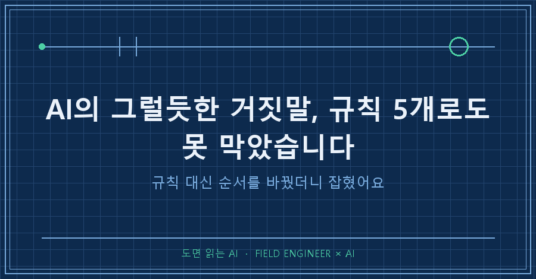
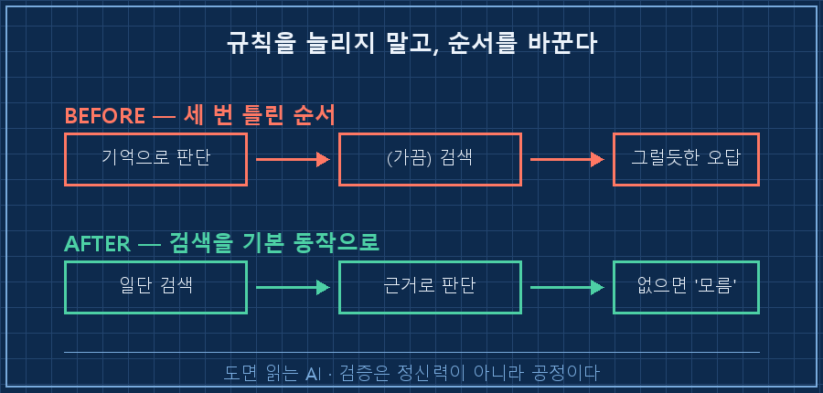

AI가 하는 그럴듯한 거짓말, 한 번쯤 당해보셨죠? 전문용어로는 할루시네이션이라고 하는데요.
"거짓말하지 마", "팩트체크 해" 이런 규칙을 넣어두면 좀 나아지겠지, 다들 그렇게 생각하잖아요?
저도 그런 줄 알았거든요.
근데 규칙을 다섯 개나 넣어놨는데 같은 질문에 세 번 연속으로 틀리는 걸 봤어요.
그날 뭘 배웠는지 기록해두려고 합니다!

저는 15년차 제어 엔지니어예요.
수소 설비 제어판넬 설계하고 PLC 코드 짜는 게 일이고요.
개인 AI 작업 환경을 꽤 깊게 파서 쓰는 편이에요. 작업 이력이랑 피드백 규칙을 전부 파일로 쌓아놔서, 제 AI는 '아' 하면 '어' 하는 파트너거든요.
근데 그런 파트너한테도 함정이 있더라고요.
이 글은 그 시스템이 보기 좋게 뚫린 날의 기록이에요.
1. 같은 질문에 세 번을 틀렸어요
지난달이었어요. AI 회사에서 새 모델이 나왔다는 소식을 듣고, 쓰던 AI한테 물어봤어요.
"이 모델이 정확히 뭐야?"
첫 번째 답. "그런 모델은 없습니다."
단정이었죠. 알고 보니 그 모델은 바로 전날 출시된 거였어요.
AI 학습 데이터가 그 전에 끊겨 있어서 몰랐던 것뿐이고요.
모르면 모른다고 하면 되는데, 없다고 잘라 말한 거예요.
"있다던데?" 하니까 두 번째 답이 왔어요.
이번엔 그럴듯한 설명에 출처까지 붙여서요.
근데 그 출처가 지어낸 거였어요. 내용은 우연히 맞았는데 근거는 창작..
출처를 따지니까 세 번째 답. "그건 잘못된 정보 같습니다."
또 검색 한 번 안 하고 단정했고, 이것도 틀렸어요.
제일 어이없는 건, 이 AI한테 웹 검색 기능이 멀쩡히 붙어 있었다는 거예요.
30초면 확인되는 걸 세 번 다 자기 기억만으로 답했어요.
2. AI 거짓말 방지 규칙이 다섯 개나 있었거든요
제 규칙 파일을 열어봤어요.
"원문 미확인이면 단정 금지",
"공식 수치는 웹검색 검증 필수",
"하드웨어 사양 추측 절대 금지"..
이런 규칙이 이미 다섯 개 있었어요.
전부 예전에 비슷한 사고를 한 번씩 겪고 추가한 것들이에요.
그런데 그날, 다섯 개 중 단 하나도 발동하지 않았습니다.
3. 여섯 번째 규칙을 쓰다가 멈췄어요
습관대로 새 규칙을 쓰기 시작했어요. "모르는 건 반드시 검색할 것."
쓰다가 손이 멈췄어요.
다섯 개가 안 먹혔는데 여섯 번째가 먹힐 이유가 없잖아요.
규칙 추가는 문제를 고치는 게 아니라 저 혼자 마음 편해지자고 하는 일이더라고요..
곱씹어보니 본질은 따로 있었어요.
AI는 자기가 모른다는 걸 몰라요.
학습 데이터에 없는 걸 물으면 "내 지식에 없음"이 아니라 "세상에 없음"으로 처리해버려요.
그러니 "모르면 검색해"라는 규칙은 애초에 작동할 수가 없는 거예요. 자기가 모르는 순간을 감지하지 못하니까요.

4. 규칙 대신 순서를 바꿨어요
그래서 규칙을 늘리는 대신 행동 순서를 바꿨어요.
판단하고 검색하는 게 아니라, 검색하고 판단하기.
"최신 정보나 확신 없는 사실은 일단 검색부터. 검색해도 안 나오면 모른다고 답하기."
아는지 모르는지를 AI 스스로 판단하게 두지 않고, 검색을 기본 동작으로 박은 거죠.
그러고 같은 질문을 다시 시켰어요.
이번엔 검색부터 하더라고요.
출시일, 필요한 프로그램 버전, 토큰당 가격까지 공식 문서 기준으로 전부 정확하게 나왔어요.
세 번을 틀리던 질문이 검색 한 번 앞세우니까 한 번에 끝났습니다!
5. 야단쳐서 고쳐지는 게 아니더라고요
사람도 비슷하잖아요.
"실수하지 마" 백 번 말하는 것보다 체크리스트 한 장이 나아요.
제조 현장에서도 품질을 작업자 정신력에 안 맡기고 검사 공정을 라인에 박아두잖아요.
AI도 매한가지예요. "정직해라, 팩트체크해라" 훈계를 쌓는 게 아니라, 확인을 건너뛰면 다음으로 못 넘어가는 순서를 만들어야 해요.
오해는 마세요. 저한테 AI는 여전히 '아' 하면 '어' 하는 파트너예요.
다만 이 파트너, 모르는 걸 모른다고 말할 줄을 몰라요.
그건 옆에서 구조로 잡아줘야 하는 거고요.
이 사건 이후로 저는 AI 산출물마다 검증 단계를 몇 겹으로 깔았어요. 이번 글이 그 첫 번째 이야기고요.
다음 글에선 AI가 만든 계산서를 실제 설비 문서로 어떻게 교차검증했는지 써볼게요.
여러분도 AI의 그럴듯한 거짓말에 당해본 적 있으신가요?
---
현장 엔지니어를 위한 AI 도입·교육 문의: makefield.ai